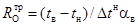
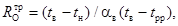
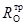

ОРДЕНА ТРУДОВОГО КРАСНОГО ЗНАМЕНИ
ЦЕНТРАЛЬНЫЙ НАУЧНО-ИССЛЕДОВАТЕЛЬСКИЙ ИНСТИТУТ
СТРОИТЕЛЬНЫХ КОНСТРУКЦИЙ им. КУЧЕРЕНКО
(ЦНИИСК им. КУЧЕРЕНКО) ГОССТРОЯ
СССР
ПОСОБИЕ
по проектированию защиты от коррозии
каменных, армокаменных
и асбестоцементных конструкций
(к СНиП 2.03.11-85)
Утверждено
приказом ЦНИИСК им. Кучеренко
от 14.07.86 № 34
ПРЕЙСКУРАНТИЗДАТ
Москва - 1988
Рассмотрены вопросы расчета и конструирования защиты от коррозии каменных, армокаменных и асбестоцементных конструкций, позволяющие сократить эксплуатационные расходы, связанные с преждевременным износом конструкций в агрессивных средах.
Даны примеры расчета и конструирования.
Для инженерно-технических работников проектных и строительных организаций.
Пособие разработано ЦНИИСК им. Кучеренко (кандидаты техн. наук А.К. Гончаров, В.К. Потапов) при участии МИСИ им. Куйбышева (кандидат техн. наук В.А. Объедкова); НИИЖБа (кандидаты техн. наук М.Г. Булгакова и М.И. Субботкин); Проектхимзащиты (инж. Л.Н. Луговской).
1.1. Настоящее Пособие предназначено для проектирования наземных конструкций зданий из кирпича и камня, находящихся в условиях агрессивной среды. При проектировании подземных конструкций следует руководствоваться СНиП 2.03.11-85, гл. 2 «Каменные и асбестоцементные конструкции». Пособие не распространяется на проектирование защиты каменных и армокаменных конструкций, выполненных из природных и бетонных камней.
1.2. При проектировании каменных конструкций, предназначенных для эксплуатации в агрессивной среде, их долговечность должна быть обеспечена применением коррозийно-стойких материалов, установлением дополнительных требований в части конструктивных решений и расчета, а также введением в кладочный раствор добавок и защитой арматуры и поверхности конструкций рекомендуемыми покрытиями.
1.3. В зависимости от физического состояния агрессивные среды делятся на жидкие, твердые и газообразные. Степень агрессивного воздействия сред по отношению к каменным конструкциям оценивается с учетом камня и кладочного раствора.
1.4. Степень агрессивного воздействия газообразных и твердых сред на конструкции из кирпича глиняного пластического прессования и силикатного кирпича принимается по табл. 22 и 23 СНиП 2.03.11-85.
1.5. Воздействие твердых и газообразных сред на керамические пустотные камни оценивается так же, как на кирпич глиняный пластического прессования. Воздействие этих же сред на кирпич глиняный полусухого прессования оценивается так же, как и на силикатный кирпич.
1.6. Степень агрессивного воздействия газообразных и твердых сред на армокаменные конструкции принимается, как для железобетонных конструкций, по соответствующим таблицам СНиП 2.03.11-85.
1.7. Большинство твердых сред (соли, аэрозоли, пыль и др.), как правило, в сухом состоянии неагрессивны. Однако при увлажнении многие из них становятся агрессивными растворами, например аммиачная селитра, поваренная соль, хлористый кальций и др. Из-за гигроскопичности многих пылеватых продуктов, а также наличия образовавшихся растворов давление водяных паров, в силу закона Рауля, становится меньше, что вызывает необходимость проведения дополнительных расчетов влажностного режима наружных стен и уточнения температуры точки росы на их внутренних поверхностях. Химический состав аэрозолей, присутствующих в воздухе производственных помещений, следует считать аналогичным составу продукта, перерабатываемого на данном производстве. В целях сохранения защитных покрытий на конструкциях не допускается непосредственный контакт конструкций с твердой агрессивной массой (удобрениями). В этом случае необходима установка разградительных щитов.
1.8. Жидкие среды в виде кислот, солей, щелочей, растворителей и т.п. воздействуют главным образом на полы.
Следует учесть возможность агрессивного воздействия жидких сред в виде брызг или проливов на стены, колонны опор. В этом случае рекомендуется применять химически стойкое защитное покрытие, а также другие, аналогичные по защите конструктивные решения.
1.9. Кирпич глиняный и керамические камни при эксплуатации в агрессивных средах должны удовлетворять требованиям ГОСТ 530-80. Марка кирпича при условиях эксплуатации В (см. табл. 3) должна быть не ниже М 100.
1.10. Кирпич и камни силикатные при эксплуатации в агрессивных средах должны удовлетворять требованиям ГОСТ 379-79.
1.11. Строительные растворы для кирпичной кладки и штукатурки должны изготавливаться в соответствии с СН 290-74. Кладочный раствор для зданий с влажным и мокрым режимами, а также особыми условиями эксплуатации должен быть не ниже М 100. С целью повышения плотности растворного шва в растворы следует вводить пластифицирующие добавки, снижая при этом водоцементное отношение. При отсутствии штукатурки швы должны быть расшиты.
1.12. В качестве теплоизоляционных материалов для применения в облегченной кладке и кирпичных панелях следует применять минераловатные плиты на синтетической связке и пенопласты, кроме ФРП-1, который допускается применять только в зданиях с сухим и нормальным режимом. В облегченной кладке допускается применение засыпок из местных материалов, стойких по отношению к агрессивной среде помещений.
1.13. В качестве герметизирующих и уплотняющих материалов для стыков наружных стеновых конструкций допускается применение морозостойкого пластичного полиуретанового поропласта, пористых резиновых прокладок, листовой морозостойкой резины, пороизола, гернита, клей-мастики и других материалов, рекомендованных в Руководстве по проектированию антикоррозийной защиты строительных конструкций производственных зданий предприятий текстильной промышленности (НИИЖБ Госстроя СССР. - М., 1988. - 87 с.).
1.14. При проектировании каменных и армокаменных конструкций для агрессивных сред следует применять следующие конструктивные решения:
внутренние несущие и ограждающие каменные и армокаменные конструкции выполняются из полнотелого кирпича; применение силикатного кирпича для помещений с мокрым режимом не допускается;
наружные несущие и ограждающие каменные и армокаменные конструкции проектируются при ручной кладке однослойными и облегченными из пустотелых кирпичей и пустотных камней, из виброкирпичных панелей и блоков; кладка из полнотелого кирпича допускается только при соответствующем технико-экономическом обосновании; в зданиях с влажным и мокрым режимами наружные стены должны быть оштукатурены с внутренней стороны и иметь защитное покрытие;
наружные стены зданий с особыми условиями и мокрым режимом следует проектировать однослойными самонесущими и не несущими из полнотелого кирпича;
применение силикатного кирпича, глиняного кирпича полусухого прессования, а также пустотелого кирпича и керамических камней для наружных стен подвалов и цоколей не допускается;
применение силикатного кирпича в условиях воздействия жидких агрессивных сред не допускается.
1.15. При проектировании каменных зданий следует отдавать предпочтение индустриальным конструкциям из виброкирпичной кладки.
1.16. Применение противоморозных добавок при возведении конструкций из кирпича и керамических камней в зимнее время допускается только для зданий с сухим и нормальным температурно-влажностными режимами и при отсутствии повышенных требований к внешнему виду зданий.
1.17. Применение перемычек, покрытий и перекрытий из штучных каменных материалов на строительных растворах в зданиях с агрессивными средами допускается в виде сводчатых конструкций, позволяющих избежать возникновения растягивающих напряжений. Допускается также применение сборных панелей армокерамических перекрытий при наличии, соответствующего технико-экономического обоснования.
1.18. В зданиях с особыми условиями и мокрым режимом для северных районов следует предусматривать специальную конструкцию наружных стен (например, с защитным экраном с внутренней стороны и вентилируемой прослойкой). В тех случаях, когда при этих условиях применяется кирпичная стена, кладку следует предусматривать на цементно-песчаном растворе 1:2 с заполнением швов под залив с перевязкой в каждом ряду и расшивкой швов с наружной стороны.
1.19. Светопрозрачные ограждения должны иметь в местах примыкания к стенам специальные герметизирующие уплотнители. Для исключения увлажнения подоконной части стены за счет конденсата в межоконном пространстве следует предусмотреть применение железобетонных или деревянных подоконных досок с антикоррозийным водонепроницаемым покрытием и влагоизоляцию стен по периметру проема. В помещениях с мокрым режимом и особыми условиями необходимо предусмотреть водоотвод конденсата с внутренней поверхности остекления и из межстекольного пространства.
1.20. В вертикальных и горизонтальных швах панелей и по периметру оконных проемов должна быть предусмотрена герметизация изнутри. Стыки стеновых панелей и перегородок должны быть омоноличены пластифицированным цементно-песчаным раствором М 100.
1.21. Горизонтальная гидроизоляция стен на уровне пола первого этажа должна быть выполнена из рулонных изоляционных материалов или полимерных растворов. Для гидроизоляции, в том числе подземной части, следует применять материалы повышенной химической стойкости.
1.22. В целях предотвращения конденсации на строительных конструкциях в помещениях с различными температурно-влажностными режимами и различными агрессивными средами их нужно разделять глухими перегородками или, в случае необходимости, оставлять в них проемы с воздушно-тепловыми завесами.
1.23. Наружные стены зданий должны быть гладкими без поясков, выступов, ниш и других горизонтальных архитектурных деталей.
1.24. Облицовка и оштукатуривание внешних поверхностей наружных кирпичных стен с мокрыми помещениями и особыми условиями не допускаются. Наружную поверхность стен зданий с большими выделениями пыли рекомендуется гидрофобизировать. Подоконные сливы в этом случае рекомендуется проектировать удлиненными.
1.25. Защита каменных и армокаменных конструкций от воздействия агрессивных газообразных и твердых сред осуществляется:
выбором материалов каменной кладки, вяжущего и добавок для раствора;
защитой поверхности конструкций штукатуркой, лакокрасочными и водозащитными (при конденсации водяного пара) покрытиями.
Защита поверхности конструкций от воздействия жидких сред (проливы, брызги, мокрая уборка полов и т.д.) в цокольных зонах осуществляется применением химически стойких материалов.
1.26. Для защиты наружных стен от проникновения солей и конденсированной влаги из помещений с влажным и мокрым режимами, а также из помещений с особыми условиями внутреннюю поверхность стен следует защищать штукатурным слоем с уплотняющими добавками и лакокрасочными или водозащитными покрытиями в соответствии с требованиями табл. 5. При применении водозащитных покрытий на основе приклеивающих мастик штукатурка не производится.
Примечание. Добавки в растворы рекомендуется вводить в соответствии с Рекомендациями по применению бетонов и растворов с добавками полимеров (НИИЖБ Госстроя СССР. - М. Стройиздат, 1968. - 23 с.) и Руководством по применению химических добавок в бетоне (НИИЖБ Госстроя СССР. - М.: Стройиздат, 1981 - 55 с.).
1.27. Защита армокаменных конструкций производится в зависимости от степени агрессивного воздействия газообразных и твердых сред. В слабоагрессивной среде следует применять плотный кладочный раствор марки не ниже М 75. Для уплотнения раствора рекомендуется введение уплотняющих добавок, пластифицирующих добавок при снижении водоцементного отношения; в помещениях с влажным и мокрым режимами конструкции необходимо дополнительно оштукатурить. В среднеагрессивной среде следует применять плотный кладочный раствор марки не ниже М 75 с добавками - ингибиторами коррозии арматуры; в помещениях с влажным и мокрым режимами конструкции необходимо дополнительно оштукатурить и нанести лакокрасочное покрытие II группы или гидрофобизировать. В сильноагрессивной среде следует применять плотный кладочный раствор марки не ниже М 100 с оштукатуриванием поверхности конструкции и нанесением лакокрасочных покрытий III - IV группы.
1.28. Необетонированные закладные и соединительные элементы, работающие в условиях кратковременного воздействия жидкой агрессивной среды, и в наружных стенах должны быть защищены как необетонированные стальные закладные детали железобетонных конструкций. Необетонированные закладные и соединительные элементы, а также металлические элементы наружного армирования конструкций, находящихся внутри помещений, следует защищать от коррозии в соответствии со СНиП 2.03.11-85 как металлоконструкции. В деформационных швах ограждающих конструкций должны предусматриваться компенсаторы из оцинкованной, нержавеющей или гуммированной стали, полиизобутилена или других материалов и установка их на химически стойкой мастике с плотным закреплением. Конструкция деформационного шва должна исключать возможность проникновения через него агрессивной среды.
1.29. В случае, когда на внутренней поверхности наружных стен допускается образование конденсата, внутренняя поверхность стены должна быть влагоизолирована (см. рис. 2). При длительном расчётном периоде конденсации (более 5 сут.) на внутренней поверхности стен необходимо дополнительно предусмотреть организованный отвод конденсата.
1.30. Подбор наружной и внутренней отделки должен производиться на основе расчетов влажностного режима и указаний п. 1.41 и п. 1.42.
1.31. Выбор защитных материалов следует производить по СНиП 2.03.11-85 и табл. 5.
1.32. Воздействие агрессивной среды помещений на наружные стены зданий учитывается путем введения дополнительных требований к теплотехническим и прочностным расчетам.
1.33. Теплотехнический расчет наружных стен производится в соответствии со СНиП II-3-79** с учетом положений, изложенных в п.п. 1.34-1.40 Пособия.
1.34. Влажностный режим помещений зданий и сооружений в зимний период в зависимости от температуры и условной относительной влажности внутреннего воздуха устанавливается по табл. 1.
Таблица 1
|
Условная относительная влажность внутреннего воздуха, %, при температуре, °С |
|||
|
до 12 |
12-24 |
св. 24 |
|
|
Сухой |
До 60 |
До 50 |
До 40 |
|
Нормальный |
61-75 |
51-60 |
41-50 |
|
Влажный |
76-100 |
61-75 |
51-60 |
|
Мокрый |
Св. 100 |
76-100 |
61-75 |
|
Особые условия |
- |
Св. 100 |
Св. 75 |
Примечание. Величина условной относительной влажности внутреннего воздуха может быть более 100 %.
1.35. Условная относительная влажность внутреннего воздуха помещений устанавливается расчетом по формуле (1):
φусл. = е/Еp · 100, (1)
е = φE/100, (2)
где φ - заданная относительная влажность в помещении;
е - парциальное давление пара;
Е - давление насыщенных паров воды при заданной температуре воздуха в помещении;
Еp - давление насыщенных паров воды над растворами водорастворимых солей, составляющих аэрозоль, при той же температуре.
1.36. Значения давления паров воды над растворами водорастворимых солей, составляющих аэрозоль, принимаются по табл. 2 или по другим расчетным или экспериментальным данным специализированных организаций.
Таблица 2
|
Давление насыщенного пара, Па, при t, °С |
Состав твердой фазы |
Равновесная относительная влажность воздуха при t = 20 °С |
||||
|
10 |
15 |
20 |
25 |
|||
|
ZnCl2 |
- |
- |
233 |
- |
ZnCl2 |
10 |
|
ZnBr2 |
- |
- |
231 |
287 |
ZnBr2·H2O |
10 |
|
MgCl2 |
- |
- |
770 |
- |
MgCl2 |
33 |
|
CaCl2 |
- |
- |
820 |
- |
CaCl2·6H2O |
35 |
|
Zn(NO3)2 |
- |
- |
985 |
- |
Zn(NO3)2 |
42 |
|
Na2S2O3 |
497 |
760 |
1052 |
1415 |
Na2S2O3·5H2O |
45 |
|
Mg(NO3)2 |
- |
- |
1261 |
1656 |
Mg(NO3)2·6H2O |
54 |
|
Ca(NO3)2 |
746 |
954 |
1287 |
1605 |
Са(NО3)2·4Н2О |
55 |
|
NaBr |
- |
959 |
1400 |
1787 |
NaBr |
60 |
|
NH4NO3 |
915 |
1195 |
1565 |
1990 |
NH4NO3 |
67 |
|
NaNO3 |
946 |
1315 |
1805 |
2365 |
NaNO3 |
77 |
|
NaCl |
921 |
1280 |
1805 |
2380 |
NaCl |
77 |
|
NH4Cl |
966 |
1351 |
1852 |
2415 |
NH4Cl |
79 |
|
Co(NH2)2 |
995 |
1365 |
1870 |
2405 |
Co(NH2)2 |
80 |
|
(NH4)2SO4 |
970 |
1352 |
1900 |
2600 |
(NH4)2SO4 |
81 |
|
Na2SO4 |
908 |
1333 |
1925 |
2745 |
Na2SO4 |
82 |
|
KCl |
1055 |
1445 |
1980 |
2635 |
KCl |
84 |
|
Na2SO3 |
1072 |
1485 |
2035 |
2760 |
Na2SO3 |
87 |
|
CdSO4 |
1098 |
1515 |
2075 |
2825 |
CdSO4·8/3Н2О |
89 |
|
Na2CO3 |
- |
1600 |
2090 |
2705 |
NaCO3·7H2O |
89 |
|
CdBr2 |
- |
- |
2120 |
2820 |
CdBr2 |
90 |
|
ZnSO4 |
1190 |
1595 |
2125 |
2690 |
ZnSO4·7H2O |
91 |
|
NH4H2PO4 |
1192 |
1660 |
2145 |
2920 |
NH4H2PO4 |
92 |
|
KNO3 |
1182 |
1632 |
2160 |
2925 |
KNO3 |
92 |
|
Na2SO3 |
1192 |
1615 |
2160 |
2865 |
Na2SO3·7H2O |
92 |
|
Na2SO4 |
- |
1605 |
2170 |
2925 |
Na2SO4·10H2O |
93 |
|
Na2CO3 |
- |
1640 |
2180 |
2775 |
Na2CO3 10H2O |
93 |
|
CaH4(PO4)2 |
1193 |
1690 |
2200 |
3050 |
CaH4(P04)2 |
94 |
|
KH2PO4 |
1193 |
1680 |
2250 |
3030 |
KH2PO4 |
96 |
|
MgSO4 |
- |
- |
2270 |
- |
MgSO4 |
97 |
|
K2SO4 |
1210 |
1700 |
2305 |
3140 |
K2SO4 |
98 |
|
H2O |
1230 |
1705 |
2340 |
3165 |
H2O |
100 |
1.37. Условия эксплуатации наружных стен в зависимости от влажностного режима помещений с учетом гигроскопичности аэрозоля и зон влажности следует установить по табл. 3.
Таблица 3
|
(по табл. 1) |
Условия эксплуатации А, Б, В в зонах влажности по СНиП II-3-79** |
||
|
сухой |
нормальный |
влажный |
|
|
Сухой |
А |
А |
Б |
|
Нормальный |
А |
Б |
Б |
|
Влажный |
Б |
Б |
Б |
|
Мокрый |
Б |
В |
В |
|
Особые условия |
В |
В |
В |
1.38. Расчетный коэффициент теплопроводности кирпичной кладки для условий эксплуатации В следует увеличивать на 0,086 Вт/(м·°С) (0,1 ккал/(м·ч·°С) град по сравнению с величиной λБ, а расчетный коэффициент теплопроводности теплоизоляционного материала - на 0,0086 Вт/(м·°С) (0,01 ккал/(м·ч·°С).
1.39. Требуемое сопротивление теплопередаче стены вычисляется по СНиП II-3-79**:

где ∆tн = tв - tрр для зданий с агрессивной средой; tpp - температура точки росы при расчетной температуре и относительной влажности воздуха в помещении.
Величина ∆tн = tв - tрр < 8 °С принимается для тех случаев, когда на поверхности стен не допускается конденсация. Если толщина стены получается экономически невыгодной, а по гигиеническим соображениям конденсация на стенах может быть допущена, то величину ∆tн для зданий с влажным и мокрым режимом, а также при особых условиях следует принимать равной ∆tн = 7 °С. При этом на внутренней поверхности стены следует предусмотреть влагозащитное покрытие.
1.40. Температура точки росы tрр с учетом агрессивной среды определяется следующим образом. На основе данных о химическом составе агрессивной среды по табл. 2 выбираются данные об упругости насыщенного водяного пара при различных температурах и наносятся на график. На основе вычисленного ранее значения парциального давления водяного пара в помещении при расчетных значениях температуры и относительной влажности воздуха по графику находится искомое значение температуры tрр.
1.41. Выбор типа внутренних отделочных и защитных слоев следует производить на основе данных табл. 2, 4, 5.
Таблица 4
|
Равновесная относительная влажность над насыщенным раствором φнр, % |
|
|
Высокогигроскопичные |
φнр ≤ 40 |
|
Среднегигроскопичные |
40 < φнр ≤ 60 |
|
Гигроскопичные |
60 < φнр ≤ 75 |
|
Малогигроскопичные |
75 < φнр ≤ 90 |
|
Практически не гигроскопичные |
φнр > 90 |
Таблица 5
|
Тип лакокрасочного покрытия |
|||||||||||||||
|
Влажностный режим внутреннего воздуха |
|||||||||||||||
|
сухой |
нормальный |
влажный |
мокрый |
особые условия |
|||||||||||
|
до 12 ° |
12-24° |
св. 24° |
до 12 ° |
12-24° |
св. 24° |
до 12 ° |
12-24° |
св. 24° |
до 12 ° |
12-24° |
св. 24° |
до 12 ° |
12-24° |
св. 24° |
|
|
Высокогигроскопичные |
Р |
Р |
Р |
Р |
Р |
Р |
Р |
Ж |
Ж |
Ж |
Ж |
Ж |
Ж |
Ж |
Ж |
|
Среднегигроскопичные |
Р |
Р |
Р |
Р |
Р |
Р |
Р |
Р |
Ж |
Ж |
ж |
ж |
Ж |
Ж |
Ж |
|
Гигроскопичные |
Р |
Р |
Р |
Р |
Р |
Р |
Р |
Р |
Р |
Р |
ж |
ж |
ж |
ж |
ж |
|
Малогигроскопичные |
О |
О |
О |
О |
О |
О |
Р |
Р |
Р |
Р |
Р |
Р |
ж |
ж |
ж |
|
Фактически не гигроскопичные |
О |
О |
O |
О |
о |
О |
Р |
Р |
Р |
Р |
Р |
Р |
ж |
ж |
ж |
Примечания: 1. Степень гигроскопичности аэрозоля определяется по табл. 4.
2. Принятые в таблице обозначения: Ж - к покрытию предъявляются требования защиты от воздействия жидкой влаги без расчета на паропроницаемость; Р - к покрытию предъявляются требования повышенной паронепроницаемости, определяется по расчету; О - к покрытию предъявляются требования как к декоративно-отделочному слою. Кроме того, покрытия Ж и Р должны отвечать специальным требованиям по химической стойкости. Выбор покрытий типов О и Р производится в соответствии с прил. 3 СНиП 2.03.11-85. К покрытиям типа О относятся все покрытия I группы материалов. К покрытиям типа Р относятся все лакокрасочные покрытия групп II-IV. К покрытиям типа Ж относятся защитные покрытия III-IV групп облицовочных материалов по прил. 4 СНиП 2.03.11-85.
1.42. Наружную отделку стен необходимо проектировать с учетом сопротивления ее паропроницания на основе расчетов влажностного режима.
1.43. Расчеты прочности и устойчивости наружных стен зданий с мокрым режимом и особыми условиями следует производить в соответствии с требованиями СНиП II-22-81 с дополнительными расчетами по пп. 1.44-1.54 настоящего Пособия. Для зданий с другими режимами расчеты конструкций производятся только в соответствии с указанным СНиП.
1.44. Для климатических районов требования к марке морозостойкости кирпича не предъявляются, если расчетная зимняя температура выше - 10 °С.
1.45. Расчетом определяются наибольшая толщина промерзания наружных стен δ, средняя по массе и толщине влажность стены в зимний период ω, допускаемая степень повреждения кирпича на наружной поверхности W.
1.46. Наибольшая толщина промерзания однослойных наружных стен, определяющая границу льдообразования в стене при t= - 15 °С, вычисляется по формуле (4)
δ = |Ro(tн-15)/(tв-tн)-0,05|λв,
где tв - расчетная температура внутреннего воздуха;
tн - расчетная температура наиболее холодной пятидневки;
λв - коэффициент теплопроводности кирпичной кладки по условиям эксплуатации В;
Rо - сопротивление теплопередаче стены.
1.47. Средняя влажность ω стены в зимний период устанавливается расчетом нестационарного влажностного режима с помощью ЭВМ или на основе данных натурных наблюдений за влагосодержанием стен аналогичных зданий.
1.48. Распределение степени повреждения W кладки за период эксплуатации принимается линейным с максимумом на наружной поверхности и минимумом W=0 на границе талой и мерзлой зон δ (рис. 1).
1.49. На момент окончания срока эксплуатации или межремонтного периода принимаются 2 предельных состояния: когда кладка расслаивается вдоль стены на границе максимального промерзания стены δ за счет появления опасных растягивающих напряжений, вызванных остаточным расширением кладки в процессе ее повреждения, и когда разрушение кладки начинается с наружной поверхности, чему соответствует появление опасных сжимающих напряжений от воздействия деформаций остаточного расширения кладки.
Рис. 1. Распределение степени повреждения W кирпичной кладки в промерзающей зоне.
1.50. Распределение собственных напряжений в стене, вызванных остаточным расширением промерзающей части кладки, при значении повреждения W к концу срока эксплуатации, характеризуется эпюрой на рис. 2.
1.51. При вычислении степени повреждения кладки W на наружной поверхности стены к концу срока эксплуатации могут быть 2 случая. Первый, когда находится точка пересечения горизонтальной линии, соответствующей вычисленным значениям δ/h и изолинии D0. Этому случаю соответствует разрушение стены в виде расслоения на границе промерзания δ. Второй, когда искомое значение W соответствует точке пересечения δ/h и Dδ = (1-μ). Этому случаю соответствует начало разрушения кладки на наружной поверхности стены. В первом случае статические расчеты наружной стены проводятся по СНиП II-22-81, при этом в расчет принимается толщина стены h-δ. Во втором случае статический расчет производится по СНиП II-22-81 для всей толщиныh, но прочность кладки и модуль ее упругости должны быть снижены соответственно в K1 и К2 раз (см. п. 1.53.).
1.52. Определение допускаемой величины степени повреждения W кладки на наружной поверхности к концу срока эксплуатации, когда наибольшие растягивающие или сжимающие напряжения достигают предельного значения, производится по номограмме (рис. 3) и по данным о безразмерных величинах Dδ и D0, характеризующих механические характеристики кладки:
D0 = Rр/R(1-μ); Dδ = (1-μ).
где Rр, R - расчетные сопротивления кладки из кирпича и камня правильной формы соответственно на осевое растяжение и сжатие;
μ - коэффициент Пуассона, принимаемый равным 0,17.
Рис. 2. Эпюра собственных напряжений в наружной стене, вызванных деформацией расширения кирпичной кладки при ее деструкции (повреждении W).
Рис. 3. Номограмма для вычисления степени повреждения кладки (W) однослойных стен к концу срока эксплуатации.
Вычисленные значения D0 для различных марок кирпича и раствора помещены в табл. 6.
Таблица 6
|
Марка раствора |
|||||
|
200 |
150 |
100 |
75 |
50 |
|
|
200 |
64×10-3 |
69×10-3 |
77×10-3 |
83×10-3 |
94×10-3 |
|
150 |
64×10-3 |
69×10-3 |
76×10-3 |
83×10-3 |
92×10-3 |
|
100 |
- |
75×10-3 |
83×10-3 |
88×10-3 |
100×10-3 |
|
75 |
- |
- |
72×10-3 |
77×10-3 |
83×10-3 |
|
50 |
- |
- |
- |
76×10-3 |
83×10-3 |
1.53. С учетом характера распределения повреждений в промерзающей части кладки по п. 1.48., допускаемой величины повреждения к концу срока эксплуатации вычисляются данные о снижении прочности кладки на сжатие к1 и модуля упругости к2 соответственно по формулам (5) и (6):
к1 = |(h-δ)+δ(1-W)2|/h; (5)
к2 = |(h-δ)+δ(1-W)|/h. (6)
1.54. Марка морозостойкости камня принимается равной Мрз 50 для стен зданий с особыми условиями и мокрым режимом. При проектировании таких зданий в Северной климатической зоне и более суровых условиях испытания камня на морозостойкость следует проводить в соответствии c требованиями ГОСТ 7025-78 с применением насыщенных растворов гигроскопических солей, свойственных данному виду производства при условии оттаивания их после замораживания в этом растворе.
Примеры расчета
Пример 1. Требуется определить конструкцию наружной стены здания сушки калийного комбината, проектируемого в г. Перми.
По химическому составу готовых продуктов, представленному технологами, выбирается наименование преобладающего продукта, т.е. из состава
KCl - 95 %; CaS04 - 0,4 %;
NaCl - 4 %; Вr - 0,103 %;
MgCl2 - 0,03 %; Н2О - 0,4 %.
выбирается KCl. По табл. 2 определяется величина Еp при температуре tв = + 20 °С, соответствующей расчетной температуре воздуха в помещении; Еp = 1980 Па (14,5 мм рт. ст.). При заданной величине относительной влажности воздуха в помещении φв = 50 % вычисляется упругость водяного пара е:
е = φв E/100 % = 0,5 × 2385 = 1192 Па (8,77 мм рт. ст.).
где E = 2385 Па (17,54 мм рт. ст.) для tв = + 20 °С определяется по книге Строительная теплотехника ограждающих частей зданий (Фокин К.Н. - М.: Стройиздат, 1973 - 285 с.).
Вычисляется величина условной относительной влажности внутреннего воздуха
φусл. = е/Eр × 100 % = 1192/1980 × 100 % = 60,5 %.
По табл. 1 определяется, что режим помещений классифицируется как влажный.
По табл. 3 Пособия и СНиП II-3-79** определяется, что условия эксплуатации наружной стены - Б.
Таким образом, расчетное значение коэффициента теплопроводности для кирпичной кладки из керамического пустотного кирпича на цементно-песчаном растворе γ = 1200 кг/м3 равно: λБ = 0,52 Вт/(м·К) (0,45 ккал/м·ч·°С).
Требуемое сопротивление теплопередаче кирпичной стены для сушильного отделения по СНиП II-3-79**

где tв - расчетная температура воздуха в помещении, tв = 20 °С; tн - расчетная температура наружного воздуха в г. Перми для массивных стен (температура наиболее холодной пятидневки), tн = - 34 °С; αв - коэффициент теплоотдачи внутренней поверхности, αв = 8,7 Вт/(м2·К) [7,5 ккал/(м2·ч·°С)], tpp - температура точки росы с учетом агрессивной среды находится по интерполяции данных табл. 2, построенных на графике (рис. 4).
Рис. 4. Кривая упругости водяного пара над насыщенным раствором KCl
Ранее вычисленная величина е = 1190 Па (8,77 мм рт ст.) откладывается на графике по вертикальной координатной оси, а по горизонтальной оси вычисляется температура точки росы tрр = 13,5°С.
Таким образом,

Толщина стены расчетом получается равной:
h = 1,11×0,45 = 0,50 м.
Рис. 5. Конструкция наружной стены здания сушки калийного комбината:
1 - облицовочный кирпич; 2 - растворные швы расшиты; 3 - цементно-песчаная штукатурка, 4 - лакокрасочное покрытие; 5 - керамические камни.
По табл. 2 и 4 определяются степень гигроскопичности KCl и тип лакокрасочного покрытия на внутренней поверхности (тип Р) по табл. 5. Расчеты влажностного режима в данном случае необходимо производить исходя из оценки выбираемой наружной отделки и подбора внутреннего отделочного слоя типа Р. Марка морозостойкости камня для рассматриваемого случая должна быть Мрз 35. Статические расчеты каменной кладки в данном случае производятся в соответствии со СНиП II-22-81 без пояснений, изложенных в данном Пособии. Пример конструкции наружной стены приведен на рис. 5.
Пример 2. Требуется определить конструкцию наружной стены здания флотации того же комбината.
По химическому составу калийных руд определяется, что преобладающим элементом в них является NaCl (36 %).
По табл. 2 определяется величина Еp для температуры воздуха в помещении tв = + 15 °С Ер = 1280 Па (9,3 мм рт. ст.).
При заданной относительной влажности воздуха в помещении φ = 60 % вычисляется величина е
е = φЕ/100 % = 0,6·1740 = 1044 Па (7,7 мм рт. ст.).
Вычисляется величина условной относительной влажности внутреннего воздуха
φусл. = е/Ер × 100 % = 83 %.
По табл. 1 находим, что режим помещений классифицируется как мокрый.
По табл. 3 Пособия и СНиП II-3-79** условия эксплуатации наружной стены определяются условиями В. Таким образом, расчетное значение коэффициента теплопроводности кирпичной кладки из сплошного глиняного кирпича пластического прессования на цементно-песчаном растворе γ = 1800 кг/м3 равно:
λв = 0,812 + 0,116 = 0,93 Вт/(м·К) [0,8 ккал/(м·ч·°С)].
Для вычисления величины на графиках наносится зависимость Ep - t для NaCl по данным табл. 2 и для е = 1045 Па по графику находится температура точки росы tpp = 11 °С (рис. 6).
Рис. 6. Кривая упругости водяного пара над насыщенным раствором NaCl
Таким образом,
=( 15 + 34)/8,7(15 - 11) =49/8,7 = 1,4 м2·К/Вт (1,64 м2·ч·°С/ккал).
Толщина стены должна быть равна:
h = 1,64 × 0,8= 1,31 м.
Так как толщина стены 1,31 м экономически невыгодна, вновь вычисляем требуемое сопротивление стены по формуле
= (15 + 34)/(8,7·7) = 0,8 м2·К/Вт (0,935 м2·ч·°С/ккал).
Толщина стены из сплошного глиняного кирпича в данном случае получается расчетом h = 0,935×0,7 = 65,3 см. Конструктивно принимаем толщину равной h = 66 см, из кирпичной кладки толщиной 64 см и штукатурного слоя 2 см. Расчетом проверяем температуру на внутренней поверхности стены по формуле:
τв = tв - (tв - tн)/Roαв = 15 - 7 = 8 °С < tрр = 11 °С.
Из расчета получается, что температура внутренней поверхности на 3 °С ниже точки росы для расчетной температуры наиболее холодной пятидневки. Соответственно табл. 4 и 5 принимается решение о защитном покрытии на внутренней поверхности стены типа Ж. Учитывая период конденсации, следует дополнительно предусмотреть в проекте конструктивные мероприятия по отводу конденсата с внутренней поверхности стен. Влажностный расчет в данном случае производить нет необходимости, так как на внутренней поверхности будет запроектировано паро- и водонепроницаемое покрытие. Поскольку условия эксплуатации наружной стены определены условиями В, перед статическими расчетами следует провести следующие дополнительные расчеты.
Наибольшая толщина промерзания стены вычисляется по формуле:
δ = [0,94(34 - 15)/(34 + 15) - 0,05]0,7 = 0,22 м.
Относительная глубина промерзания стены δ/h составит 0,35.
Принимая глиняный сплошной кирпич пластического прессования марки М 100, марку цементно-песчаного раствора М 100, вычисляем безразмерный критерий D0 = Rp/R (1 - μ), характеризующий начальные механические свойства кладки. По табл. 6 D0 = 83·10-3.
По номограмме (рис. 3) на пересечении горизонтальной линии, соответствующей δ/h = 0,35 и изолинии D0 = 83·10-3, находим по горизонтальной оси соответствующее значение W = 0,3.
Полученный результат означает, что при степени повреждения (деструкции) кирпича на наружной поверхности W = 0,3 в конце срока эксплуатации наибольшие собственные напряжения растяжения на границе талой и мерзлой зон достигнут опасного значения, и в дальнейшем стена в этом сечении может расслоиться. Поэтому в расчетах прочности и устойчивости следует принять толщину стены h - δ = 0,64 - 0,35 = 0,3 м.
Пример конструкции наружной стены приведен на рис. 7.
Рис. 7. Конструкция наружной стены здания флотации калийного комбината:
1 - кирпич глиняный сплошной пластического прессования; 2 - пластифицированный цементно-песчаный раствор; 3 - растворные швы расшиты; 4 - цементно-песчаная штукатурка с уплотняющими добавками; 5 - облицовочная плитка.
2.1. Настоящее Пособие распространяется на проектирование защиты от коррозии асбестоцементных конструкций стен, перегородок, подвесных потолков и покрытий зданий и инженерных сооружений, работающих в условиях агрессивной среды.
2.2. Защита должна проектироваться на основе:
учета данных об агрессивности составляющих среды в зоне строительных конструкций;
учета местных условий строительства;
учета условий последующей эксплуатации.
2.3. Проектирование защиты асбестоцементных конструкций от коррозии должно выполняться в следующем порядке:
в техническом задании на проектирование объекта строительства должны быть указаны климатические и гидрогеологические условия, технологические воздействия, условия контакта агрессивной среды и конструкций, продолжительность и периодичность агрессивного воздействия. На основании этих данных в соответствии с действующими нормами устанавливаются вид и степень агрессивного воздействия среды на асбестоцементные конструкции;
для данного вида и степени агрессивного воздействия согласно действующим нормам устанавливаются дополнительные требования к материалам и конструкциям, которые должны быть учтены при проектировании, а также вид применяемой защиты.
2.4. Защита асбестоцементных конструкций, предназначенных для эксплуатации в агрессивной среде, требуемая их долговечность должны быть обеспечены за счет лакокрасочного и гидроизоляционного покрытия.
2.5. Стойкость асбестоцемента зависит в основном от цементного камня и от характера его пористости, которая преимущественно открытого характера. Поэтому асбестоцемент подвержен всем видам агрессивных воздействий, характерным для бетона на портландцементе В4.
Агрессивные среды в зависимости от физического состояния делятся на газовые, твердые и жидкие.
2.6. На асбестоцемент степень воздействия устанавливается:
для газовых сред - видами и концентрацией газов, температурой и влажностью;
для твердых сред (грунты, пыль, аэрозоли и соли) - влажностью окружающей среды, гигроскопичностью, растворимостью в воде и дисперсностью;
для жидких сред - наличием и концентрацией агентов, температурой и величиной напора жидкости.
2.7. По степени воздействия на асбестоцемент среды разделяются на неагрессивные, слабо-, средне- и сильноагрессивные.
2.8. Степень агрессивности газовой среды по отношению к асбестоцементу принимается в зависимости от влажности газов, как и для бетона, по табл. 2 разд. 2 СНиП 2.03.11-85.
2.9. Степень агрессивности твердых сред (пыли, соли, аэрозоли) по отношению к асбестоцементу зависит от гигроскопичности, растворимости твердых сред и относительной влажности воздуха и принимается, как и для бетона, по табл. 3 разд. 2 СНиП 2.03.11-85.
2.10. Непосредственный контакт асбестоцемента с массой твердых гигроскопических продуктов или отходов производства не допускается.
2.11. Степень агрессивности жидких сред по отношению к асбестоцементу при постоянном и временном смачивании поверхности жидкой агрессивной средой устанавливается по табл. 4, 5, 6 разд. 2 СНиП 2.03.11-85, как и для бетона.
Постоянный контакт асбестоцемента с жидкой агрессивной средой допускается при наличии антикоррозийного покрытия в зависимости от степени агрессивного воздействия.
2.12. При проектировании асбестоцементных конструкций следует принимать следующие конструктивные решения:
2.13. Асбестоцементные конструкции и изделия, принимаемые для неутепленных стен и кровельных покрытий, эксплуатируемых в слабо-, средне- и сильноагрессивной среде, должны отвечать требованиям ГОСТ 16223-81 для утепленных стен и покрытий, а также специальных инженерных сооружений; листы плоские должны отвечать требованиям ГОСТ 18124-75* на изделия высшего сорта (А), прессованные.
2.14. При проектировании асбестоцементных конструкций для зданий с агрессивной средой рекомендуется применять клеевые соединения элементов, а также экструзионные асбестоцементные панели.
2.15. Асбестоцементные стеновые панели не должны контактировать с грунтом. Эти конструкции следует располагать на цоколе, имеющем гидроизоляционную прокладку, предохраняющую асбестоцементные стеновые панели от капиллярного подсоса грунтовых вод.
2.16. При проектировании утепленных асбестоцементных конструкций для зданий с агрессивной средой рекомендуется применять плиты покрытий и панели стен вентилируемые или полые с закрытыми торцами.
2.17. При проектировании асбестоцементных резервуаров для хранения жидких агрессивных сред следует внутри проводить защиту асбестоцемента наклейкой стеклоткани и покрытием ее эпоксидной шпаклевкой или другим агрессивно-стойким покрытием.
2.18. Восстановление в процессе эксплуатации зданий антикоррозийных покрытий следует производить по мере износа, но не реже одного раза в 5 лет.
2.19. Все шурупные соединения, а также крепления плит и панелей должны быть оцинкованы от коррозии в соответствии с требованиями СНиП 2.03.11-85.
2.20. Бескаркасные плиты и панели с утеплителем из пенопластов не допускается применять для ограждений зданий со средне- и сильноагрессивной средой.
2.21. Каркасы и обрамления асбестоцементных плит и панелей следует защищать от коррозии в соответствии с СНиП 2.03.11-85 для металлических и деревянных каркасов.
2.22. Каркасные плиты и панели, эксплуатируемые в сильноагрессивной среде, рекомендуется проектировать на деревянных или асбестоцементных каркасах.
2.23. Внутренние поверхности асбестоцементных конструкций, эксплуатируемых в слабоагрессивной среде, должны быть покрыты в заводских условиях алкидными, масляными, нитроцеллюлозными, полимерцементными, поливинилацетатными, бутадиен-стирольными водоэмульсионными, перхлорвиниловыми и на сополимерах винилхлоридных лакокрасочными материалами и кремнийорганическими жидкостями (прил. № 3 СНиП 2.03.11 - 85, группы покрытия I, II).
2.24. Внутренние поверхности асбестоцементных конструкций, эксплуатируемых в среднеагрессивной среде, должны быть покрыты в заводских условиях кремнийорганическими, полиуретановыми, эпоксидными, эпоксидно-фенольными, перхлорвиниловыми и на сополимерах винилхлоридных, хлоркаучуковыми, хлорсульфированными полиэтиленами, хлорнаиритовыми лакокрасочными материалами (прил. № 3 СНиП 2.03.11-85, группа покрытия III).
2.25. Внутренние поверхности асбестоцементных конструкций, эксплуатируемых в сильноагрессивной среде, должны быть покрыты в заводских условиях эпоксидными, эпоксидно-фенольными, перхлорвиниловыми и на сополимерах винилхлоридных хлорсульфированными полиэтиленами, лакокрасочными материалами (прил. № 3 СНиП 2.03.11-85, группа покрытия IV).
2.26. Асбестоцементные короба должны, как правило, устанавливаться только на вытяжке воздуха из помещения. Для приточных систем должны быть разработаны и утверждены Госгражданстроем Госстроя СССР специальные мероприятия по защите внутренней поверхности вентиляционных коробов.
Асбестоцементные короба, применяемые для вентиляции зданий со слабо-, средне- и сильноагрессивной средой, должны быть покрыты в заводских условиях лакокрасочными материалами согласно (прил. № 3 СНиП 2.03.11-85).
Агрессивность среды внутри короба должна приниматься повышенной на одну ступень.
2.27. Асбестоцементные специальные инженерные сооружения при наличии грунтовых вод слабой, средней и сильной агрессивности должны быть покрыты в заводских условиях кремнийорганическими, полиуретановыми, эпоксидными, эпоксидно-фенольными, перхлорвиниловыми и на сополимерах винилхлоридных, хлоркаучуковыми, хлорсульфированными полиэтиленами, хлорнаиритовыми лакокрасочными материалами (прил. № 3 СНиП 2.03.11-85, группы покрытия II, III, IV).
СОДЕРЖАНИЕ